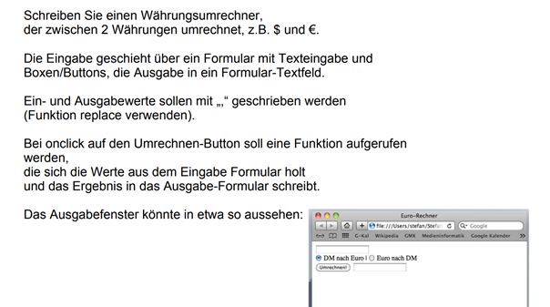

Vorlesung 5 – Sitzung vom 21.11.2022
In der fünften Vorlesung haben wir uns ausschließlich mit JavaScript befasst. Dabei haben wir die Themen Strings und Eingaben über Formulare bearbeitet.
Strings
Strings sind dafür da, um mit Zeichenketten zu arbeiten. Der Unterschied zu den Datentyp char, welcher von Java bekannt ist, besteht somit darin, dass eine ganze Zeichenkette in einer Variablen gespeichert werden kann. Um dies zu tun, muss ein solcher String jedoch erstmal erzeugt werden. Dies ist auf mehrere Weisen möglich:
let text = new String("Dies ist ein String");
let text = new String ();
text = "Dies ist ein String";
let text = "Dies ist ein String";
Sobald ein String definiert wurde, bringt dieser weiteren
Funktionalitäten und Methoden mit, um die Arbeit und Handhabung mit
Strings zu vereinfachen. Ein Beispiel dafür wäre die
charAt()-Methode. Mit dieser Methode lässt sich
herausfinden an welcher Stelle des Strings, welcher Buchstabe steht.
Mit charAt(13) lässt sich somit herausfinden, welcher
Buchstabe an der 14. Stelle der Zeichenkette steht. 14 darum, da der
String bei 0 anfängt und nicht bei 1. Implementiert wird dies mit
Hilfe des Punkt-Operators. Somit kann man einfach hinter die Variable,
in welcher die Zeichenkette gespeichert ist, ein Punkt setzen und mit
charAt() auf eine beliebige Stelle zugreifen oder den
Buchstaben an dieser Stelle zurückgeben.
Dies ist jedoch nicht die einzige Methode, die ein String mitliefert.
In der folgenden Tabelle werden die verschiedenen Methoden und ihre
Funktion erläutert.
| Methode | Funktion |
| indexOf() | Sucht innerhalb des Strings nach einem bestimmten Wort oder Wortteil von vorne und gibt die Position des erstens Zeichen der Folge wieder. |
| lastIndexOf() | Genauso wie indexOf(), jedoch mit dem Unterschied, dass die Suche von hinten begonnen wird. |
| substring() | Es lässt sich ein Teil eines Strings lesen. Mit den übergebenen Zahlen lässt sich der Bereich des Strings definieren. |
| split() | Teilt einen String in mehrere Teilstrings. Als übergebende Wert ist jener, wo der String geteilt wird. |
Formular Objekte
Wie man ein sogenanntes Formular Objekt erzeugt und initialisiert
schauen wir uns nun im Folgenden an. Um die zwei Buttons und ein
Eingabefeld zu realisieren, benötigen wir das
<form>-Tag. Innerhalb des
<form>-Tags wird ebenfalls die id und
ein name definiert, über welches man es im Nachhinein
referenzieren kann.
Um nun die Buttons und das Eingabefeld zu erzeugen, benötigen wir nun
die <input>-Tags. Diese werden mit dem Zusatz
type="button" oder type="text" erstellt.
Auch dabei werden die id und ein
name definiert und ebenso ein value, welches
einen Wert zuordnet.
Der folgende Code...
<form id="mein Formular" name="Mein Formular">
<p>
<input type="button" id="button1" name="button1" value="button1">
<input type="button" id="button2" name="button2" value="button2">
<input type="button" id="button3" name="button3" value="button3">
</p>
</form>
...sieht so auf einer Website aus:
Um nun ein Formular zu referenzieren, benötigt man den document-Aufruf und den Punktoperator, welcher wie folgt aussehen würde:
let x = document.getElementById("button1");
Somit würde in der Variablen x der Button1 gespeichert
werden. Möchte man aus einem Textfeld einen Wert in einer Variablen
speichern benötigt man am Ende des Aufrufes ein .value.
Es gibt noch weitere Attribute im form-Tag. Im folgenden
gebe ich einen Überblick über die verschiedenen Objekte und Ihre
Funktion
| Objekt | Funktion |
| Password-Objekt | Ähnlich wie ein Text-Objekt, jedoch werden eingegebene Zeichen nicht gezeigt. |
| Hidden-Objekt | Ebenfalls vergleichbar mit dem Text-Objekt, jedoch wird dies nicht angezeigt. Dient zum zwischenspeichern. |
| Submit-Objekt | Ist ein spezielles Button-Objekt. Wird verwendet um Formulare zu verschicken. |
| Reset-Objekt | Ist das Gegenstück vom Submit-Objekt und alle Eingaben werden gelöscht. |
| Checkbox-Objekt | Auswahlfelder, in der man eine Option aktivieren kann. |
Übung
Zur Vertiefung haben wir folgenden Aufgabe bearbeitet:
